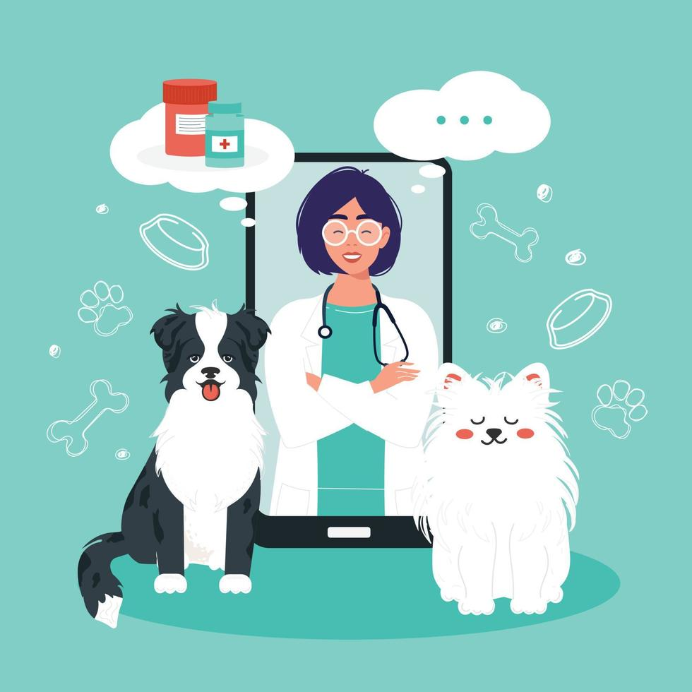
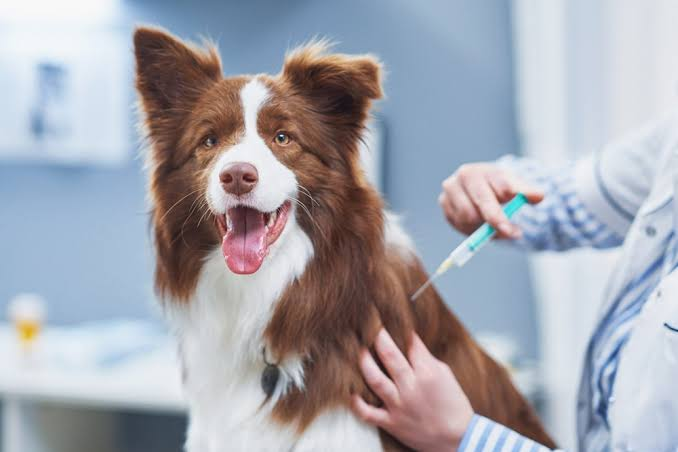
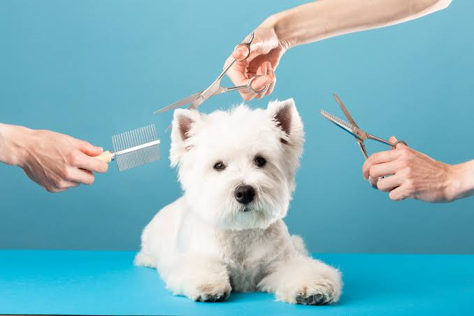
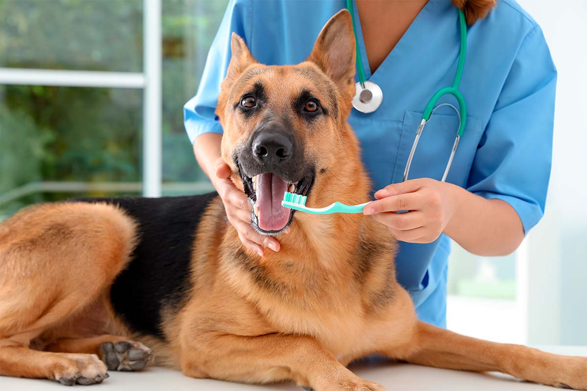
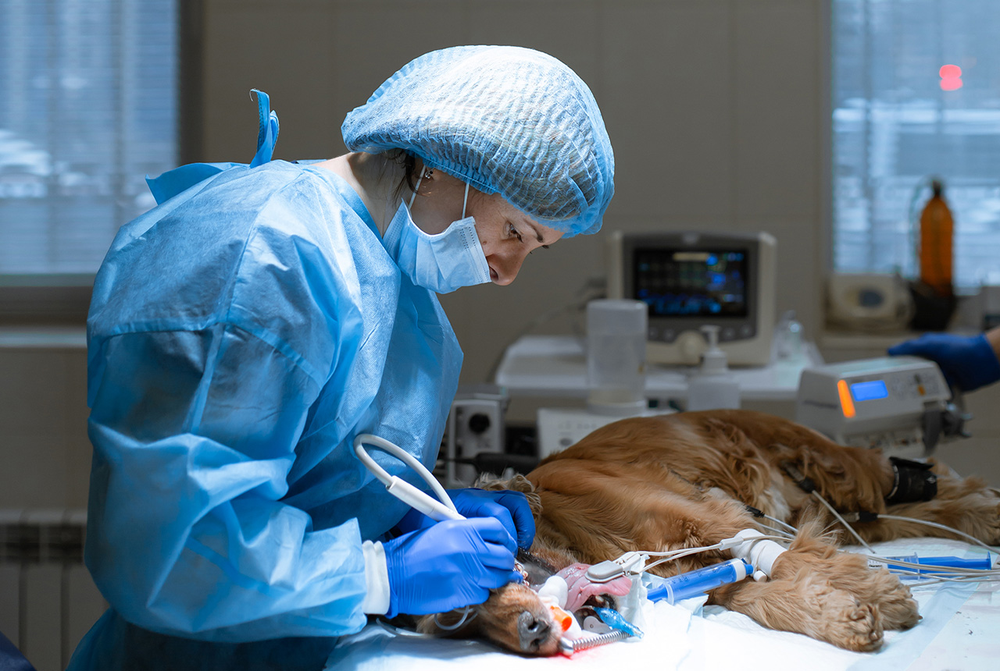

Nuestros Servicios
Brindamos atención integral para mantener a tu mascota sana y feliz.
Consulta General
Evaluación médica completa para prevenir y detectar enfermedades.

Vacunación
Aplicación de vacunas para proteger a tu mascota de diversas enfermedades.

Baño y Estética
Baño, corte de pelo, limpieza de oídos y cuidado de uñas.

Limpieza Dental
Mantenimiento de la salud bucal para prevenir infecciones y mal aliento.

Cirugías
Procedimientos quirúrgicos realizados por profesionales capacitados.
